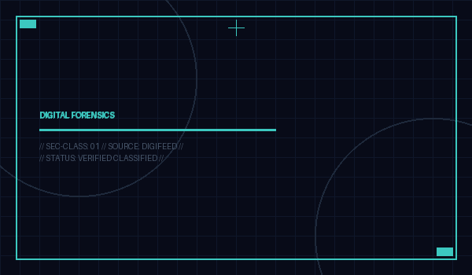

DFIR ArticlesThe Value of Documentation
If someone asked me to name the biggest shortcoming in DFIR, and in cybersecurity, in general, I'd have to say documentation. We miss a lot of value because activity and analysis goes undocumented, and it is lost.


![Critical PHP Vulnerability (CVE-2026-109618, CVE-2026-109619) [infocon yellow] - SANS Internet Storm Center](https://lh3.googleusercontent.com/J6_coFbogxhRI9iM864NL_liGXvsQp2AupsKei7z0cNNfDvGUmWUy20nuUhkREQyrpY4bEeIBuc=s0-w300)